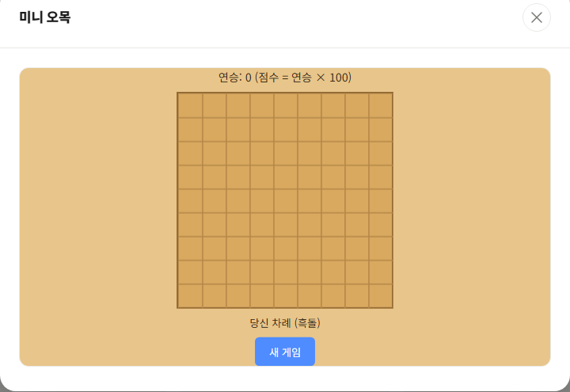

미니 오목은 DSC GAMES의 전략 카테고리 게임 중 하나로, 9x9 크기의 작은 보드에서 흑돌과 백돌을 번갈아 두며 가로·세로·대각선 중 한 방향으로 5개를 먼저 연결하면 승리하는 오목(五目) 게임입니다. 사람이 흑돌, AI가 백돌을 잡고 대결합니다.

기본 규칙
- 보드는 9x9 크기이며, 빈 칸을 클릭해 돌을 놓습니다.
- 가로·세로·대각선 어느 방향이든 같은 색 돌 5개를 연속으로 놓으면 승리합니다.
- 보드가 가득 차도록 승부가 나지 않으면 무승부로 처리됩니다.
- 이길 때마다 연승이 1씩 올라가고, 점수는 연승 횟수 × 100으로 계산됩니다. AI에게 지면 연승이 초기화됩니다.
AI를 이기는 전략 3가지
1. 중앙을 먼저 차지하세요
오목은 보드 중앙에 가까울수록 사방으로 돌을 연결할 수 있는 방향이 많아집니다. 첫 수는 가능하면 보드 정중앙 근처에 두는 것이 유리합니다.
2. 양쪽이 열린 3을 만드세요
같은 색 돌 3개를 양쪽 끝이 모두 비어 있는 형태로 연결하면("열린 3"), 상대는 반드시 한쪽을 막아야 합니다. 이 형태를 여러 방향에서 동시에 만들면 AI가 전부 막을 수 없어 승기를 잡을 수 있습니다.
3. 상대의 4를 반드시 막으세요
AI가 돌 4개를 연속으로 놓으면 다음 차례에 바로 5개를 완성해 승리합니다. 이 게임의 AI는 자신이 이길 수 있는 자리를 발견하면 그 즉시 착수하도록 만들어져 있으므로, 상대가 4개를 연결한 형태를 만들었다면 다른 공격보다 방어를 우선해야 합니다.
연승 기록에 도전해보고 싶다면 게임 목록에서 미니 오목을 바로 플레이해 보세요. 로그인하면 최고 점수(연승 기록)가 서버에 저장되어 다음에 접속해도 이어서 확인할 수 있습니다.